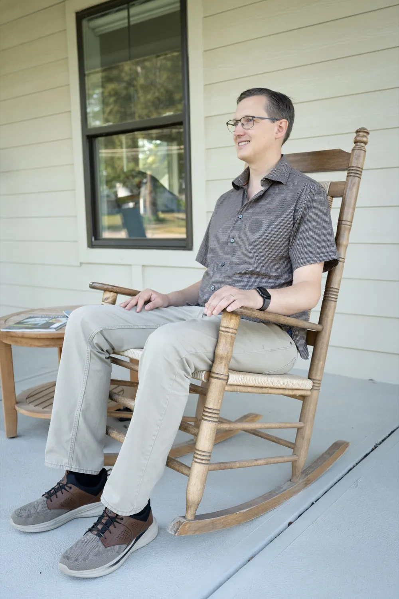

ValuesTechnology is stewardship.
The systems I work on belong to the people who depend on them. I treat them as if they were my own. I leave them stronger, and I leave you in control.
- StewardshipI change systems carefully and keep the trust people have placed in them.
- OpennessI prefer open source and open books. You own what you run.
- Value firstI start with how the work creates value, then choose the technology.
- ServiceI want my work to make a lasting difference where I live.
“You can be good at technology, but you need to understand the economics and how value is created to put your skills to good use.”
That advice is why I trained as a banker and later went into sales. I wanted a broad understanding of how businesses work to go with my passion for technology.

RootsFrom a village council in Germany to a porch in Old Millard.
I grew up in Lower Saxony, trained as a banker, and was elected to my town council in my twenties. I came to Omaha in 2012 as an exchange student for my MBA. I have called Omaha home ever since.
I built a house here. It runs on its own solar microgrid with battery backup. During a power outage my neighbors have a place to go. I design systems for clients the same way, with redundancy and with other people in mind.
- Town councilElected councilman in Warberg, Germany, 2011 to 2015
- Red CrossDisaster response volunteer, 2012 to 2016
- THWGermany's federal technical relief agency, 2009 to 2015
FamilyDinner with the in‑laws, twice a week.
I married here. My husband and I built our house across the street from his parents. We foster teenagers and help them find their way into adulthood.
- Across the streetmy in-laws, and dinner with them twice a week
- Under our roofthe teenagers we foster
- Exerciseruns with the dog on the West Papio Trail, swimming, and the sauna afterwards
- Weekendsboard games, the garden, scuba diving, and a hot-air balloon when the wind allows
TeammateI work as part of the team.
I have worked as an engineer, a researcher, a sales leader and a founder. I know what each role needs from the others.
- I do the workThe person who writes the proposal is the person who delivers the work.
- I teach as I goI explain, I demonstrate, and then the client's team practices. The team grows more independent each month.
- Plain languageShort, clear writing that a board and its engineers can both act on.
- I build communityI co-founded CHAOSS and helped it grow to more than 300 active contributors. I started its diversity and inclusion working group.
Five jobs that taught me to see the whole picture.
- 2007 to 2018Developer
Built websites, a billing system and a booking platform as a freelancer.
- 2008 to 2011Banker
Apprenticeship at a private bank in Germany. I learned how money and trust work.
- 2015 to 2019Researcher
Ph.D. on how organizations engage with open source. Co-founded CHAOSS.
- 2019 to 2026Sales leader
Director of Sales at Bitergia. Revenue doubled in three years.
- 2022 to todayFounder
I run Anevir. I consult, and I build my own product, Rendity.
I take on new clients by referral.
My time is committed to current clients and to my work with Growth Advisory. I take on a new engagement when a client or colleague introduces us.
For news on what I'm building, follow the Potwin blog.
Omaha, Nebraska